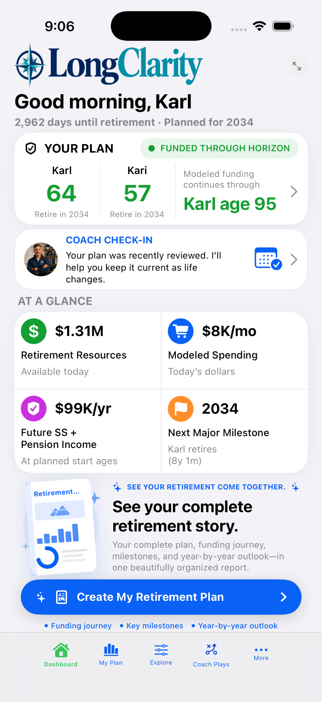
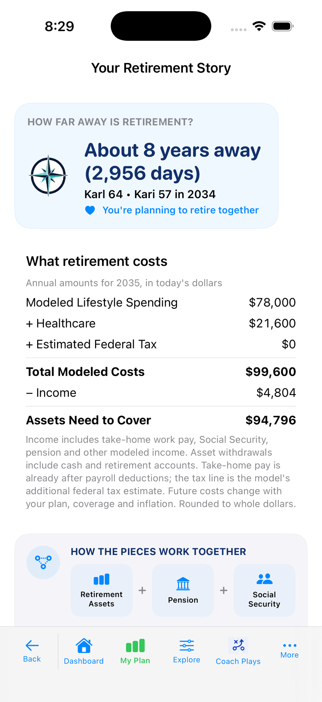
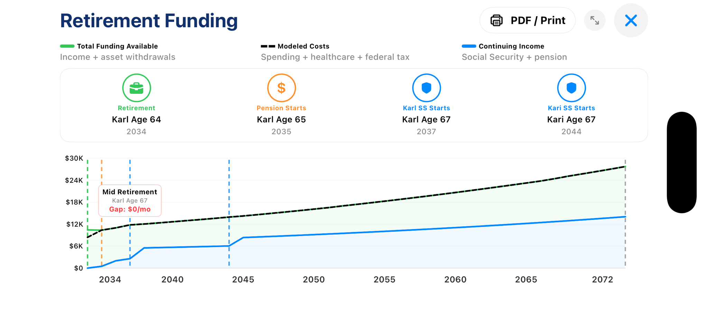
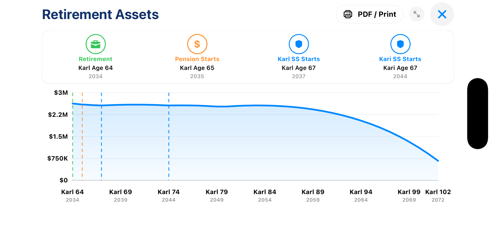
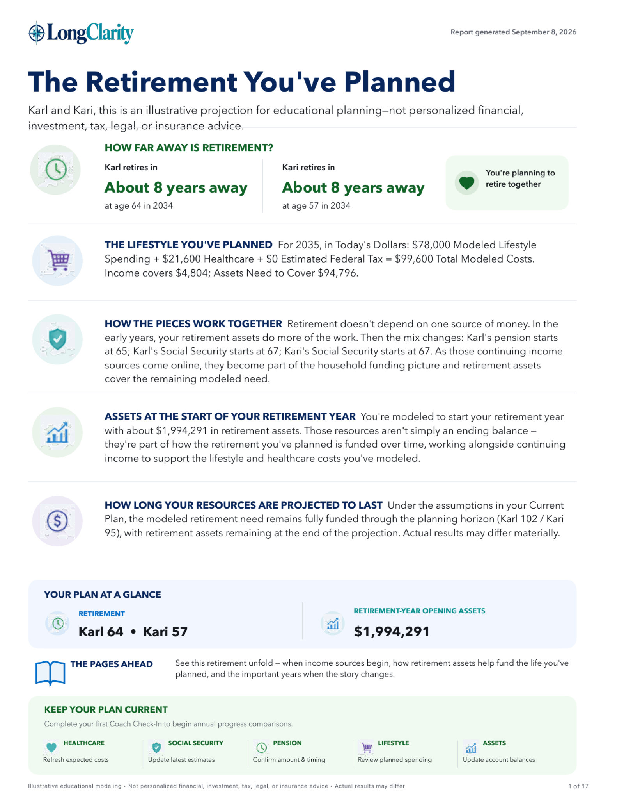
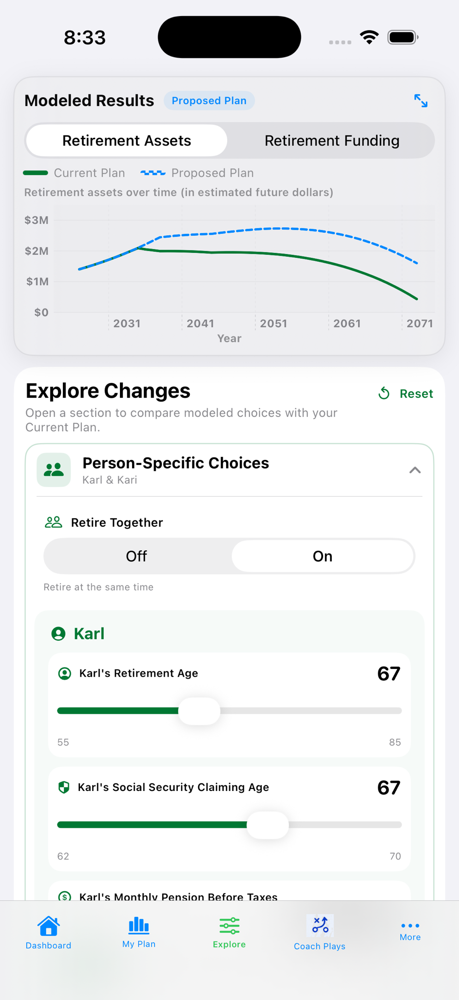
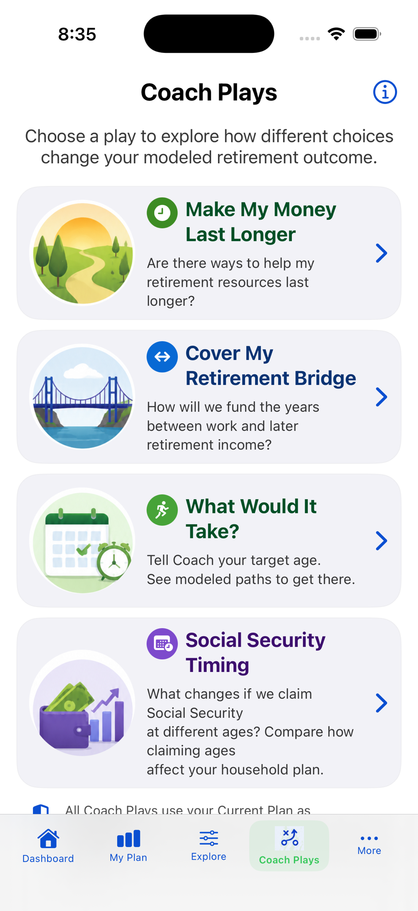
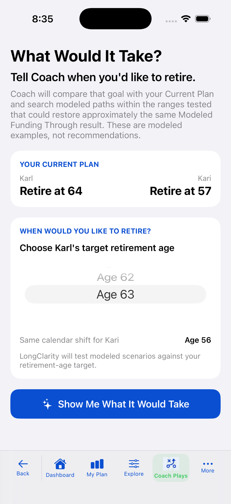
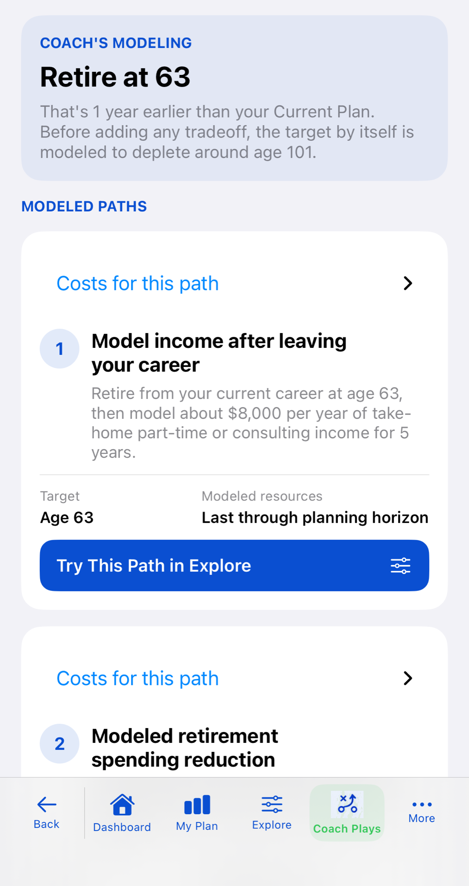

01
Your Current Plan
Keep one clear baseline for the retirement you are actually modeling today.
LongClarity brings your retirement timing, Modeled Lifestyle Spending, Healthcare, Continuing Income, and Retirement Assets into one Current Plan—then turns the numbers into a clear retirement story you can explore.
Educational retirement modeling. Not individualized financial, investment, tax, legal, or insurance advice.

LongClarity translates your Current Plan into a plain-English retirement story: when retirement begins, the Modeled Lifestyle Spending and Healthcare included in the plan, when pension and Social Security start, how Retirement Assets help cover Total Modeled Costs, and your Modeled Funding Through result.

Move from the high-level story into the charts behind it. See how Work Income, Continuing Income, and Asset Withdrawals cover Total Modeled Costs, and how Retirement Assets change over time.



With Premium, create a Retirement Modeling Report PDF that brings together your Current Plan, Retirement Funding, key milestones, assumptions, and year-by-year projection.
From your iPhone, save, share, or print the PDF for your own review.
Explore changes to retirement timing, Social Security Claiming Age, pension assumptions, Modeled Lifestyle Spending, Planned Spending Changes, Workplace Retirement Contributions, and other modeled choices. LongClarity compares a Proposed Plan with your Current Plan.
Your Current Plan stays unchanged while you explore. A Proposed Plan becomes your Current Plan only when you choose Make This My Plan.

Coach Plays are educational modeling experiences that help you explore retirement questions and tradeoffs. They use your Current Plan as the baseline and present modeled examples—not recommendations.



LongClarity lets you move from a simple outcome to the years, events, Work Income, Continuing Income, Total Modeled Costs, Asset Withdrawals, and Retirement Assets behind it.
Keep one clear baseline for the retirement you are actually modeling today.
Understand how the pieces work together without starting from a dense spreadsheet.
See modeled alternatives before deciding whether anything should change.
Go deeper when you want to see exactly how the plan unfolds over time.
LongClarity’s substantive retirement-plan information is primarily processed and stored locally on your device. LongClarity does not operate a backend server that receives or stores your retirement plan.
No third-party product analytics. LongClarity does not use a third-party product analytics service and does not transmit in-app feature-usage events to Long Clarity LLC.
Read the Privacy Policy →Available now for iPhone. Free to download, with optional Premium features.
Work Income, Workplace Retirement Contributions, Modeled Lifestyle Spending, Retirement Assets, and other parts of your financial life can change from year to year. Coach Check-In makes it easy to update what changed without starting over, helping keep your Current Plan aligned with where you are today.
A quick check keeps the plan useful. Tell LongClarity what changed and keep everything else from your Current Plan.
App problems, billing or subscription questions, bug reports, or other support needs.